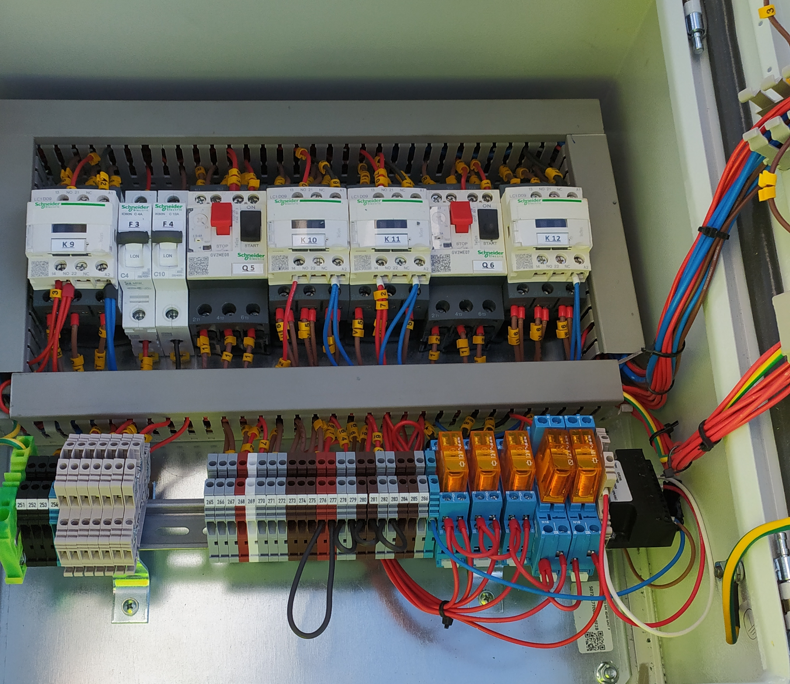
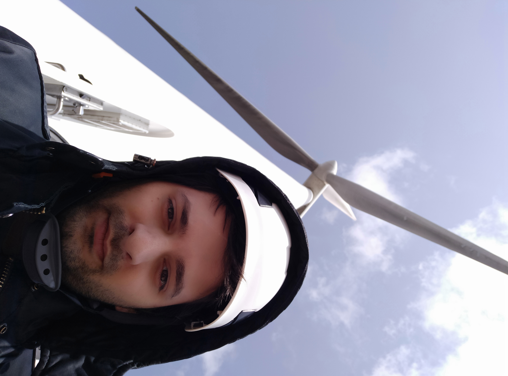
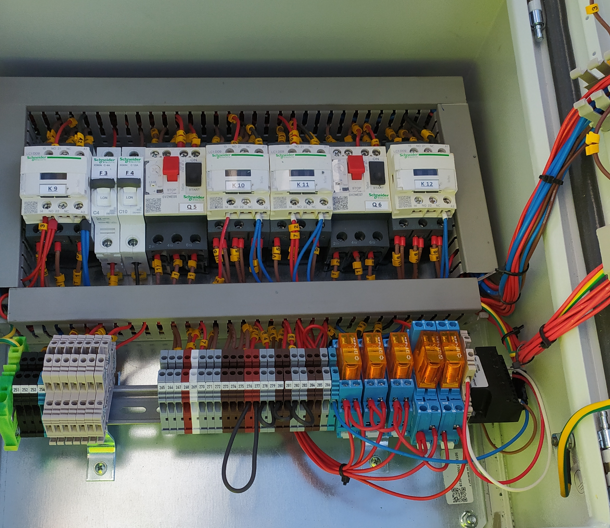
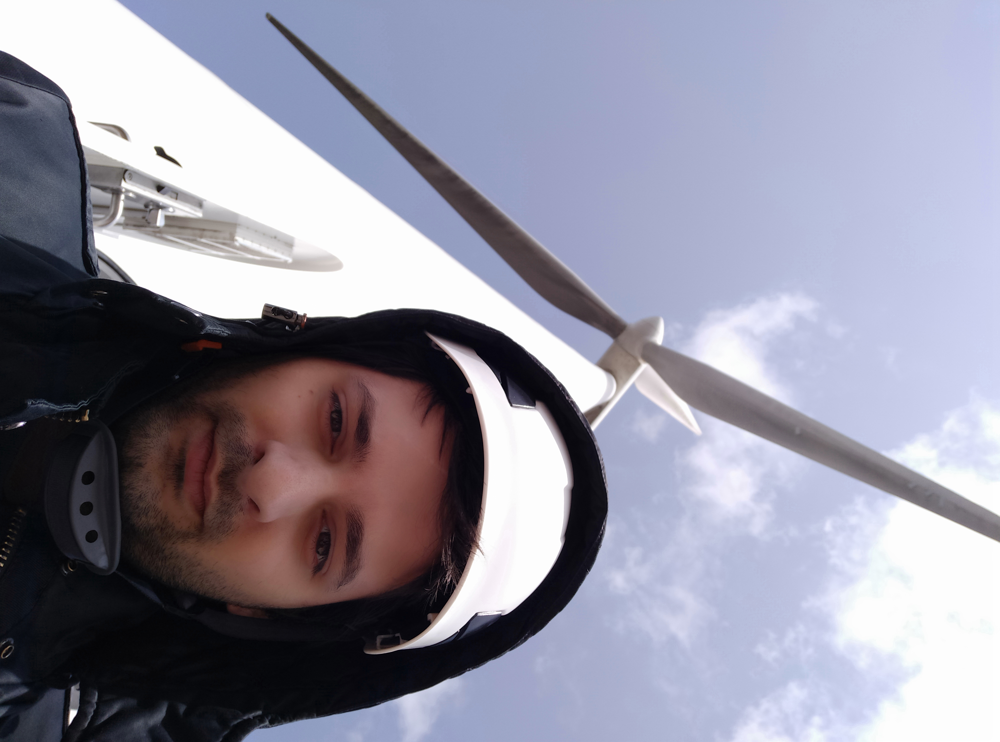

LUÍS VIEIRA
ENGENHEIRO MECÂNICO
Olá e boas vindas a esta página!
O meu nome é Luís Vieira e sou Engenheiro Mecânico.
Este website foi criado por mim com conhecimentos básicos de HTML, CSS e Javascript. Não serve para os demonstrar, mas sim dar a conhecer um pouco de mim a nível pessoal e profissional, algo que num formato tradicional de currículo tem as suas limitações. Serviu, naturalmente, como um exercício de aprendizagem de uma área que tinha alguma curiosidade.
Gosto de me manter ativo e tenho uma grande urgência em aprender constantemente,
que se reflete numa grande variedade de skills que desenvolvi e que pretendo continuar a melhorar. Dentro das minhas qualidades, destaco uma grande afinidade com informática e a criatividade na resolução de problemas.
Tenho computador desde os meus 3 anos, o que promoveu a minha afinidade com a informática e com o inglês.
Habituei-me desde muito cedo a instalar programas, aprender a usá-los; estragar computadores e aprender a arranjá-los. Hoje em dia uso Linux, que acaba por ser mais desafiante mas também recompensador na utilização mais eficiente e personalizada.
Nasci e cresci no distrito do Porto, tendo mudado para Aveiro para frequentar o Mestrado Integrado em Engenharia Mecânica.
Inicialmente moveu-me o fascínio pelas leis da física e a minha facilidade com a matemática. Após alguns anos a duvidar do meu interesse pelo curso, encontrei finalmente uma verdadeira paixão na programação com a ajuda de duas unidades curriculares do 4º ano: Informática Industrial e Visão Assistida por Computador, utilizando os softwares Visual Basic e Matlab, respetivamente.
Fiz a dissertação de Mestrado na área de projeto eletrónico,
uma oportunidade que me permitiu estudar de forma auto-didata teoria de processamento de sinal para aprofundar o que tinha aprendido em Servomecanismos. Deste modo, pude pensar o projeto de hardware com circuitos integrados e outros componentes baratos para executar algo bastante complexo.
Complementei o projeto com software embebido em Arduino que utiliza um híbrido entre C e C++.
Terminei o curso em plena pandemia, o que limitou as oportunidades de trabalho. Consegui arranjar um trabalho em Engenharia Mecânica onde tive a oportunidade de aprender imenso. Aprimorei as minhas capacidades de desenho CAD com Solidworks tendo aplicado os meus conhecimentos à produção industrial. Fiz também gestão de projeto e desenvolvimento de um produto ligado às energias renováveis.
Sempre considerei a programação como o meu objetivo principal, por isso, nos tempos livres, comecei a fazer cursos de Python para que futuramente pudesse redirecionar definitivamente a minha área profissional.
O desenvolvimento de software oferece-me liberdade de movimentos na hora de resolver problemas e de exercer processos criativos. Existe um infinito número de caminhos para chegar a um objetivo, uns mais eficazes que outros. Mas o facto destes poderem ser implementados, testados e analisados de forma imediata no nosso computador é um estímulo enorme à minha forma de abordar problemas e discutir soluções.
A resposta imediata do software incute uma mentalidade de avaliar analiticamente o nosso raciocínio mesmo que este tenha surgido empiricamente.
Na programação é possível perceber exatamente onde estão as nossas limitações e não aceitar o que está correto só porque já existe uma lista de regras e fórmulas que temos de seguir. Abordar exercícios complexos e chegar a uma conclusão funcional é extremamente recompensador a nível pessoal.
Em particular, a Visão Assistida por Computador é um ramo científico que me entusiasma muitíssimo, porque é uma aliança entre duas áreas que adoro: a imagem e a programação. O desenvolvimento de software para Visão permite-me aprofundar conhecimentos sobre ambos. Devido à extrema complexidade dos problemas que nos são propostos durante o Mestrado, acabei por ficar fascinado por esta área.
A curto prazo tenho como objetivo tornar-me proficiente em Python
seja na criação de pequenas funções, scripts e pequenos programas que sejam funcionais a nível prático na indústria. Pretendo adquirir conhecimentos a nível profissional para que, com mais prática, possa tirar partido da minha rapidez de execução e da minha criatividade.
Eventualmente quero sentir-me confiante de que os meus conceitos de programação são aplicáveis em contexto prático. Quando for um programador avançado, gostaria de trabalhar em Visão Assistida por Computador ou desenvolvimento de videojogos. Assim, vejo Python como a linguagem que abre o leque várias áreas que me fascinam.
Seria também muito desejável trabalhar em Linux diariamente e continuar a desenvolver competências, ainda que não necessariamente fora da ótica do utilizador.
Sempre tive uma grande paixão por arte, destacando a fotografia, os videojogos e, acima de tudo, a música.
Faço música desde 2008 e gosto de saber sempre mais sobre técnicas e ferramentas vanguardistas.
Ter estudado Engenharia Mecânica permitiu-me ter fundamentos sólidos de Engenharia de Som,
especialmente durante a dissertação de Mestrado onde estudei e apliquei teoria de processamento de sinal.
Gosto de conhecer investigar obras musicais seja sobre o passado ou sobre o presente. Interesso-me por saber quem inovou no passado e quem nos ajudou a formar o contexto artístico atual. Por outro lado, quero também acompanhar quem inova no presente e estar a par de novas tendências e movimentos.
Vejo os videojogos numa vertente mais lúdica, uma vez que os acompanho desde a minha infância e são para mim uma fonte de entertenimento. No entanto, cada vez mais os vejo na ótica da programação.

 
